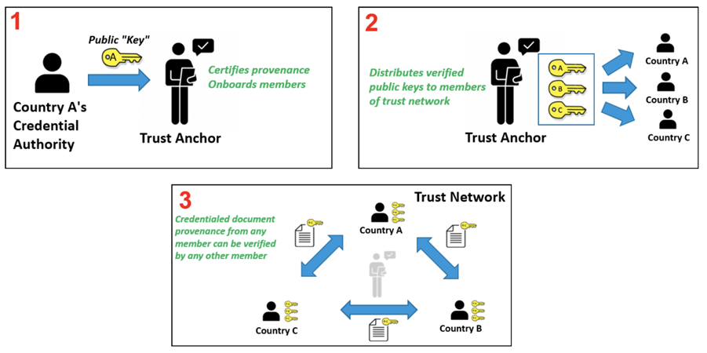
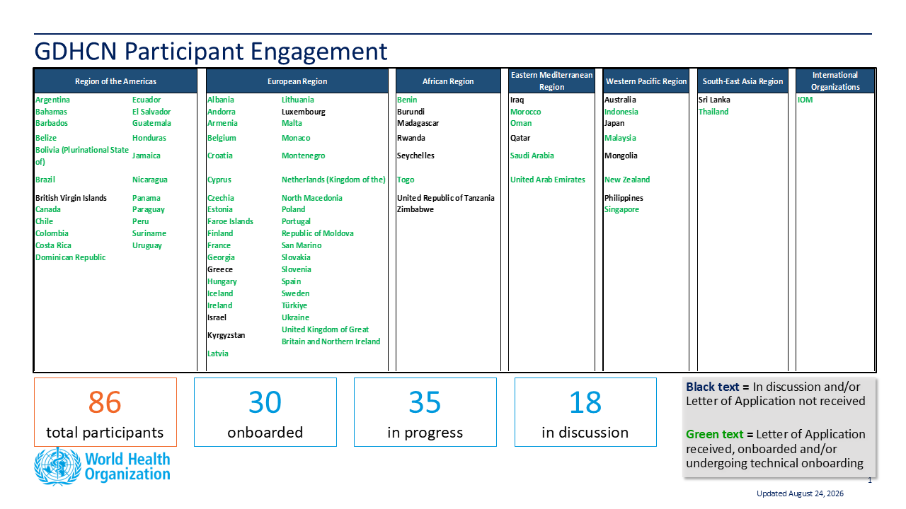

Home
Summary
This guide describes the specifications and on-boarding procedures for WHO's Global Digital Health Certification Network (GDHCN). The GDHCN is a mechanism to support verification of health documents and certifications that are exchanged between participants of the GDHCN. These health certifications may include COVID-19 certificates, routine immunization cards, and home-based records consistent with International Patient Summary standards. This mechanism provides means of harmonizing global health protocol standards and establishing a system for recognition of digital certificates for continuity of care and at point of entry. The GDHCN is designed to leverage existing investments by jurisdictions that were made under the COVID-19 response and provide the digital health infrastructure needed for resiliency in future epidemic and pandemic responses.
The GDHCN is a digital reflection of the trust WHO already has with Member States. The GDHCN is a digital trust network is based on proven concepts which are used to describe the specifications and mechanisms for establishing trust, which allow eligible participants to establish new trust domains for exchange of verifiable digital health records. Eligible participants of the trust network may apply to join by following an on-boarding process. The GDHCN is operated under the GDHCN Administrative and Operational Framework.
Trust Network

Background & Purpose
In response to COVID-19, Governments and organizations across the world have developed and adopted standards and technologies to create, present, and verify digital vaccination and test credentials. However, a global technical framework to enable convenient use and interoperability of these credentials between systems – while also allowing domestic autonomy over their use – does not exist yet and is critically needed.
The WHO Global Digital Health Certification Network is a collection of components that are used to verify interoperable digital health documents or certificates. This system of comprised of three main features:
- A collection of well defined digital health documents that are issued and verified by members of the GDHCN
- A Public Key Infrastructure (PKI) that is used for the publishing and distribution of public keys used for verification of digital signatures of the digital health documents.
- A Knowledge Library used to maintain metadata including terminology codings, product codes and business rules that are used to provide semantic interoperability of these digital health documents
In addition to verifying and validating COVID-19 certificates, a global digital health trust network such as the GDHCN can:
- Establish trust of digitally signed clinical algorithms published by WHO through the SMART Guidelines work.
- Allow for a global product catalogue of trusted medical products and devices.
- Ensure information about a patient can be accessed and trusted regardless of one is in the world.
- Support health systems resiliency to address future outbreaks in a world.
- Empower individuals to manage their own health and well-being.
The interoperable exchange of health information in a trusted environment is a complex task with an increasingly large number of stakeholders (e.g. public health agencies, accredited labs, border control organizations, institutions authorized to verify) that need to ensure that data is transferred safely and securely, that the health content is interoperable, and that information is understandable and actionable. This guide details how to utilize a global technical framework to allow interoperability of health credentials between systems, while preserving domestic autonomy over their use.
Achieving global interoperability of health certificates does not require that all jurisdictions use the same standard. Interoperability can also be achieved when there are pre-arranged mechanisms in place so that certificates issued by one jurisdiction are accepted in another. A number of services and technical artifacts have been developed to address particular criteria for establishing interoperability and a system of trust including:
- Data models, transformations and vocabulary definitions that allow exchange of health data between various standards formats, preserving a jurisdiction's autonomy regarding domestic processes while allowing re-issuance and mutual recognition of credentials between jurisdictions
- Standard specifications for exchanging public keys between various networks for verifying digital signatures on health credentials
- A global trust registry and federated public key infrastructure solution that provides technical interoperability and technical governance between regional trust networks
- Workflows for creating, sharing and executing business rules that evaluate public health policies against health data for cross-border or port of entry requirements
- Open source tools and technical guidance to reduce the burden of implementing the technical infrastructure to participate in the federated trust network, including open source trust network infrastructure for jurisdictions to implement their own regional trust networks
Circular letter to Member States
On Friday, September 29, 2023, WHO’s Director General sent a circular letter to all Member States encouraging participation in the GDHCN.
- C.L.38.2023 (Global Digital Health Certification Network) - Arabic
- C.L.38.2023 (Global Digital Health Certification Network) - Chinese
- C.L.38.2023 (Global Digital Health Certification Network) - English
- C.L.38.2023 (Global Digital Health Certification Network) - French
- C.L.38.2023 (Global Digital Health Certification Network) - Russian
- C.L.38.2023 (Global Digital Health Certification Network) - Spanish
Audience
This guide describes expected workflows for potential actors in a trust ecosystem, namely:
- Issuers that provide verifiable health credentials to individuals,
- Verifiers that consume verifiable health credentials provided by individuals, and
- Trust Networks that establish trust relationships and policies between issuers and verifiers.
The audience for this guide includes decision makers, analysts and technical assets at potential individual issuers, existing trust networks or potential verifiers who may participate in the federated trust network. Stakeholders include Member States, regional networks, and standards development organizations.
Participants
Trust Network Participants

Available Trust Domains
The codes for the GDHCN Trust Domains are contained in the GDHCN Trust Domain Value Set and are described in more detail here.
Ethical Considerations and Data Protection Principles
As with any digital solution, there are ethical considerations, such as potential impacts on equity and on equitable access, and data protection principles that need to inform the design of the technical specifications, as well as provide guidance on how resulting solutions can be ethically implemented. The following page discusses some key ethical considerations and data protection principles that Member States are encouraged to – and, where they have legal obligations, must – include in their respective deployments of digital solutions. These ethical considerations and data protection principles have also informed the design criteria for WHO’s SMART Guidelines and for the utilization of the WHO’s Global Digital Health Certification Network.
Feedback
Feedback specific to this Implementation Guide can provided through:
- Frequently asked questions can be viewed here
- Clicking on one of the Feedbacks link to the right of any section header
- Sending an email to gdhcn-support@who.int
- Creating an issue on GitHub smart-trust repository
Community
Sign up on chat.fhir.org community and follow the stream who-smart-guidelines for questions, queries and chats related to WHO SMART Guidelines
WHO also hosts weekly calls on authoring and implementing WHO SMART Guidelines where participation is welcome. Please send an email at gdhcn-support@who.int in order to get invited.
Disclaimer
The specification herewith documented is for the WHO Gloa demo working specification, and may not be used for any implementation purposes. This draft is provided without warranty of completeness or consistency, and the official publication supersedes this draft. No liability can be inferred from the use or misuse of this specification, or its consequences.
Key ethical considerations
Ethics should be an integral part of the design and deployment of a digital solution. However, policy decisions are often complex and difficult. Many different considerations will need to be made and weighed against each other. Often, the evidence is uncertain and there are many different competing ethical perspectives and positions. Evidence alone will not provide the right answer, nor will a simple set of ethical rules. Public health action requires careful judgement and acceptance of responsibility for the outcomes. A number of different ethical considerations should be taken into account, including both objectives and processes.
Objectives
A good starting point is to identify how the use of a digital solution can contribute to important general duties of any government through public health. Three key objectives of public health action are:
- to protect and promote the welfare of individuals, communities and the population as a whole;
- to ensure equal treatment for all individuals and prevent or mitigate, as far as possible, avoidable and unfair health inequalities (i.e. health inequities) within the boundaries of the state; and
- to create and maintain trust in public health activities as part of the health-care system.
The creation and use of a digital solution can contribute to each of these objectives. For example, in relation to objective 1, a digital solution can promote welfare through the provision of digital health records enabling continuity of care by ensuring that individuals have access to their health data across facilities. Promotion of this objective also contributes to confidence in the health infrastructure of the government, benefitting the whole population. Such an outcome is an important common good – that is, a good for all that cannot be created by each individual alone. Such goods require the coordinated actions of, and support from, governments. In addition, other benefits will follow from the use of a digital solution, because of improved health and subsequent increased opportunities for individuals and communities to make their own choices and pursue their own economic and social goals. In relation to objective 2, equal treatment requires respecting and protecting all persons equally and acting to ensure, as far as possible, that there is no discrimination against anyone. An example of how to work towards this objective is to ensure that appropriate personal data protection safeguards are implemented. Individual health data is private information, and protections need to be in place to ensure that no individual is forced to disclose or publicly display their personal health record (PHR) to access any public area or activity (1). Such a practice and/or the lack of a PHR itself may result in the stigmatization of individuals without a PHR and may exacerbate the risk of harms. Another example of working towards objective 2 is to think about ways to try and achieve equity through the distribution of health resources. While a digital solution may offer a more reliable, accurate and trusted mechanism to record an personal health history, they risk exacerbating health inequities, for the following reasons.
→ A PHR may increase digital exclusion if its application and use and requires that individuals have access to a digital infrastructure or if that digital infrastructure is too burdensome for all Member States to deploy.
→ Individuals with geographical, financial or disability barriers may also be excluded from obtaining and using a PHR, depending on the administration process, cost and design. Ensuring an equitable and inclusive approach to the implementation of a digital solution will mean that those with greater barriers to obtaining and using a PHR are supported to a greater extent than others.
In relation to objective 3, trust is vital to ensuring the benefits of a digital solution for individuals, communities and the whole population. For example, the provision of robust data protection measures and the use of procedural considerations, outlined in section 1.3.4, may contribute to the maintenance of trust in public health systems. This in turn contributes to the delivery of objective 1. Another example might be that a digital solution should only be used for its intended purpose, as inappropriate uses may result in legitimate ones being undermined.
Processes
The pursuit of the objectives above can create ethical problems. One way to mitigate this risk is by ensuring that various processes uphold important procedural values. These values, in turn, also contribute to the pursuit of the objectives above. Such values include:
→ TRANSPARENCY: providing clear, accurate and publicly accessible information about the basis for the policy and the process by which it is made, from the onset – i.e. notifying the public that such a process is underway. Such a process disciplines decision-making and ensures accountability by providing a sound basis for an eventual decision that reasonable members of the public may agree with.
→ INCLUSIVENESS IN DECISION-MAKING: providing opportunities for all relevant stakeholders to participate in policy formulation and design, in particular those affected, and advocates for these individuals and groups.
→ ACCOUNTABILITY: providing a clear framework for who is responsible for what, and how responsibilities will be regulated and enforced.
→ RESPONSIVENESS: providing mechanisms and opportunities to review and revise decisions and policies based on evolving scientific evidence and other relevant data. This may include public consultation or engagement with a wide range of experts, industries and other stakeholders so that the policies are responsive to real and perceived ethical issues and concerns. Particularly important stakeholders are those who are likely to be disadvantaged or face distinct or heightened risks with the creation of a PHR, such as individuals who are unable or unwilling to create a PHR, i.e. individuals with insecure or invalid citizenship or residency status, and individuals who may face other barriers in obtaining or using a PHR (2).
Ethical considerations related to further potential uses of digital personal health records for public health security measures
A number of further possible uses for digital PHRs raise ethical issues. In the context of a public health emergency, a digital PHR might play a role in achieving various public health purposes such as determining vaccination coverage in a given population, which may help to determine when to lift or relax public health and social measures (PHSMs) at a population level. A digital PHR might also be used to facilitate individualized exemption from, or, reduction of PHSMs (e.g. reduced quarantine time post exposure) or individual access to an activity based on proof of vaccination (if such uses are held to be ethical), which we can term a “health pass” function. The potential deployment or utilization of a digital PHR for these purposes, particularly as a health pass, engenders a number of potential ethical problems for individuals and communities, and human rights challenges (3,4).
First, use of a digital PHR as a health pass raises a distinct set of risks because of current scientific uncertainties emergent diseases. For example, during the COVID-19 Public Health Emergency of International Concern (PHEIC), COVID-19 vaccines have demonstrated efficacy and effectiveness in preventing severe disease and death, the extent to which each vaccine prevents transmission of SARS-CoV-2 to susceptible individuals were not fully assessed. How long each vaccine confers protection against severe disease and against infection, and how well each protects against current and future variants of SARS-CoV-2 were not fully known. In this context of scientific uncertainty, use of a digital PHR as a health pass based solely on individual vaccination status may increase the risk of disease spread. This is particularly the case if individuals with a digital PHR are completely exempted from PHSMs or if it is hard to enforce individuals’ compliance with required
PHSMs during an activity (e.g. mask wearing and physical distancing during a concert) to which they are allowed access based on their digital PHR.
Second, some potential behavioural responses to a digital PHR in its role as a health pass could undermine individual and public health. These include the following.
→ Where the benefits of a health pass are significant, it may result in digital PHR fraud. For example, fraudulent vaccination records may increase public health risks if a non-vaccinated person is potentially in contact with vulnerable people.
→ Individuals may be less willing to disclose their medical history and (potential) contraindications to a public health intervention (e.g. vaccine), in order to obtain a corresponding digital PHR, which increases the risk of adverse events.
→ The creation of a digital PHR following vaccination for each individual may incentivize more people to participate in a public health measure (e.g. receive a vaccine) to access the benefits of a digital PHR. However, it may also increase hesitancy to participate in the public health measure because of privacy and other concerns that the vaccination record could be linked to personal data and be used for functions other than those originally intended (e.g. surveillance of individual health status), or be used by unintended third parties (e.g. immigration, commercial entities, researchers) (5).
Third, a digital PHR in its use as a health pass risks introducing unfair disadvantages and injustices. For example, during the COVID-19 PHEIC, the initially limited supply of COVID-19 vaccine within some countries had been distributed to prioritize those at greatest risk of infection (such as health-care workers) or severe outcomes (such as the elderly). There is a danger that those who are willing to be vaccinated but have not yet been offered a vaccine, or those who are unable to be vaccinated for medical reasons, would be unfairly disadvantaged if a digital PHR incorporated health pass functions. Consideration should be given to whether individuals could use other proofs of health status to allow them similar access to the same services while mitigating the risk of disease spread. For example, during the COVID-19 PHEIC, these other proofs may have included a negative COVID-19 test or proof of post-infection-acquired immunity based on tests that are reliable and accurate (which have been called immunity certificates), although this also raises considerable scientific and ethical concerns (6).
Recommendations
The design, development and implementation of a digital solution raises many ethical issues. The following series of recommendations can be reviewed when considering such an implementation.
- THE SCOPE OF USE OF A DIGITAL SOLUTION SHOULD BE CLEARLY DEFINED.
Each Member State that introduces a digital solution should be clear about which uses are proposed and that it should not be used for other purposes. To prevent any potential misuse, any digital solution implementation should set out clear and specific policies, and laws if needed, on the limits to the solutions’ legitimate uses . Use of a digital solution to restrict the right to freedom to movement and other human rights is only justified when it supports the pursuit of a legitimate aim during a public health emergency and is provided for by law, proportionate, of limited duration, based on scientific evidence, and not imposed in an arbitrary, unreasonable or discriminatory manner.
- POTENTIAL BENEFITS, RISKS AND COSTS SHOULD BE ASSESSED BEFORE INTRODUCTION OF A DIGITAL SOLUTION.
The creation or development of a digital solution should be based on an assessment of the benefits and costs of its uses, and the advantages and disadvantages of the proposed infrastructure, in comparison with other potential or existing ways to record, validate and verify vaccination records. Benefit and cost assessment – as a function of stewardship of scarce public health resources – should take short-, medium- and long-term views. A short-term view would consider the utility and opportunity cost of investing in a digital infrastructure over other measures for responding to emergencies and meeting other public health needs during a public health crisis. Consideration should be given to whether the digital infrastructure could hinder the public health response because of the potential inefficiencies it may introduce for processing registrations and/or trainings etc . A long-term view would consider the potential advantages of a digital solution for strengthening the health system, such as enhancing the health information system and its interoperability across jurisdictions. In addition, the ethical issues and risks raised by a digital solution, and the impact of trade-offs between the benefits and burdens accrued to individuals, families, businesses and other relevant stakeholders should be assessed prior to implementation. Community engagement, particularly with representatives of groups who are likely to face increased disadvantages or risks, should also be conducted.
- OBTAINING AND USING A DIGITAL SOLUTION SHOULD BE AS INCLUSIVE AND FAIR AS POSSIBLE.
Digital solutions should be as inclusive as possible and should not create disadvantage. To achieve this, it may be necessary to provide alternative, cost-effective solutions, including paper-based alternatives, for individuals and groups with existing disadvantages, such as those with digital skill or disability barriers, those living in areas with poorer digital connectivity, and undocumented or irregular migrants. No one should be excluded through a requirement for individual payment to obtain and use a digital solution.
- ALL NECESSARY MEASURES SHOULD BE PUT IN PLACE TO PROTECT PARTICIPANTS FOR CONTINUITY OF CARE.
A digital solution will include potentially sensitive data relating to the health of individuals, and this data should therefore be protected by appropriate medical confidentiality and privacy safeguards. Access to or use of the data for continuity of care should be based on the appropriate consent standard (e.g. implied or explicit) in a given health-care system and should be sufficient for the receiving health-care provider or team to continue providing good medical care. These ethical standards will also apply to international transfer of data for continuity of care (such as when a patient accesses medical services abroad). For adults without decisional capacity, use of their personal health records for decisions relating to their health care may be based on their advance decisions or, in the absence of an advance decision, be made in the adult’s best interest by a health-care proxy or an authorized surrogate. Minors with sufficient intelligence and maturity should be able to allow the use of their health record data for continuity of care, where consent is required.
- ALL COMMUNICATION SHOULD BE CLEAR AND TRANSPARENT.
Implementation details of a digital solution relevant to users should be communicated in a transparent manner, which may contribute to the promotion of public trust and acceptance of the solution. This communication includes how the solution would work to benefit individuals and public health, the policies and mechanisms in place to limit access to and use of the solution by third parties, whether personal health data are linked to other types of data and the purposes of any data linkage. If, in the future, the uses of the solution are extended into other scientific or public health purposes (e.g. programme monitoring or research), data subjects and other members of the public should be informed of the nature and occurrences of these activities in advance, the ethics oversight or governance structure in place (including for surveillance activities (7)), and options for controlling or limiting personal health data for these uses. personal health data are sensitive and should, in general, be anonymized (or pseudonymized, or de-identified) for scientific or public health purposes, to minimize risks to the data subjects. Where personal health data need to be retained in an identifiable form for these purposes, consideration should be given to whether consent is required or should be waived based on satisfaction of appropriate ethical criteria (e.g. minimal risk, impracticability of obtaining consent, no adverse effects on the rights and welfare of the data subjects, and serving a public health good).
- THE DIGITAL SOLUTION SHOULD BE CONSTANTLY MONITORED FOR IMPACT AND ADJUSTED AS NECESSARY.
Post implementation, it is important to monitor the effects of digital solution in terms of positive and negative outcomes (e.g. impact on equity) and to consider potential interventions to mitigate negative outcomes. Such monitoring should also review uses that do not fit neatly into legitimate and illegitimate use categories set by policies, to consider whether these uses should be continued, modified or stopped.
Data protection principles for a Digital Solution
This section presents prerequisite fundamental data protection principles for the digital solution . The principles are designed to provide guidance to the national authorities tasked with creating or overseeing the development of the digital solution. The objectives are to encourage Member States to adopt or adapt their national laws and regulations, as necessary, respect personal data protection principles, and ensure respect for the human rights and fundamental freedoms of individuals, in particular the right to privacy, in order to build trust in the implementation of the digital solution.
The data protection principles are as follows.
- LAWFUL BASIS, LEGITIMATE USE AND FAIR PROCESSING
The personal data collected in the interest of the application of the digital solution should be processed in a fair and non-discriminatory manner, based on the consent of the data subject, the necessity to protect the vital interests of the data subject or of another data subject, or explicitly justified by legitimate public health objectives. The processing of personal data in the interest of the application of the digital solution should have a lawful basis; it should comply with applicable laws, including broader human rights standards and data privacy and data protection laws, as well as respecting the highest standards of confidentiality, and moral and ethical conduct. Personal data collected for the application of the digital solution should only be accessed, analysed or otherwise used while respecting the legitimate interests of the data subjects concerned. Specifically, to ensure that data use is fair, data should not be used in a way that violates human rights or in any other ways that are likely to cause unjustified or adverse effects on any individual(s) or group(s) of individuals. Any retention of personal data processed in the interest of the application of the digital solution should have a legitimate and fair basis. Before any data are retained, the potential risks, harms and benefits should be considered. Personal data should be permanently deleted after the time needed to fulfil their purpose, unless their extended retention is justified for specified purposes.
- TRANSPARENCY
The processing of personal data in the interest of the application of the digital solution should be carried out to be transparent to the data subjects. Data subjects should be provided with easily accessible, concise, comprehensible and reader-friendly information in clear and unambiguous language regarding: the purpose of the data processing; the type of data processed; how data will be retained, stored and shared, or made otherwise accessible; who will be the recipients of the data and how long the data will be retained. Information should also be provided to data subjects on applicable data retention schedules, and on how to exercise their data subject rights. A list of entities authorized to process personal data in the interest of the application of the digital solution should be made public.
- PURPOSE LIMITATION AND SPECIFICATION
As the personal data collected in the interest of the digital solution may only be used for the scope and purpose identified, and they should not be processed in ways that are incompatible with identified purposes. The use of data for any other purpose, including the sale and use of personal data for commercial purposes, should be prohibited, except with the explicit, unambiguous and freely given prior consent of the data subject. The purposes for which personal data are processed in the interest of the application of the digital solution should be specified no later than at the time of data collection. The subsequent use of the personal data should be limited to the fulfillment of those specified purposes. When a health worker or verifier of the digital solution is carrying out their mandated activities ; transferring personal data processed in the interest of the application of the digital solution to a third party or allowing access by a third party should only be permitted if the principles underlying the lawful basis, as referred to above, are met; and the third party affords appropriate protection that is equal to or higher than those protections provided by the data controller, for the personal data. Personal data processed in the interest of the application of the digital solution should be relevant to the purposes for which they are to be used and, to the extent necessary for those purposes, be accurate, complete, and kept up to date.
- PROPORTIONALITY, NECESSITY AND DATA MINIMIZATION
The processing of personal data should be relevant (have a rational link to specified purposes), adequate (sufficient to properly fulfil the specified purposes) and limited to what is required to fulfil the specified purposes. The processing of personal data should not be excessive for the purposes for which those personal data are collected. Data collected and retained on the digital solution should be as limited as possible, respecting proportionality and necessity. Data access, analysis or other use should be kept to the minimum necessary to fulfil their purpose. The amount of data, including their granularity, should be limited to the minimum necessary. Selective disclosure mechanisms should be used to support proportionate data access. Data use should be monitored to ensure that it does not exceed the legitimate use. Personal data retained in the interest of the application of the digital solution should only be retained and stored for the time that is necessary for specified purposes. Personal data accessed at the point of verification of the digital solution should not be retained and stored in a repository, database or otherwise.
- CONFIDENTIALITY AND SECURITY
Personal data processed in the interest of the application of the digital solution should be kept confidential and not disclosed to unauthorized parties; personal data should only be accessible to the data subject or to other explicitly authorized parties. With regard to the nature and sensitivity of the personal data processed in the interest of the application of the digital solution, appropriate organizational, physical and technical security measures should be implemented for both electronic and paper-based data in order to protect the security and integrity of personal data. This protection includes measures to protect against personal-data breach, and measures to ensure the continued availability of that personal data for the purposes for which it is processed; this applies regardless of whether the data are stored on devices, applications, servers or networks, or if they are sent through services involved in collection, transmission, processing, retention or storage. Taking into account the available technology and cost of implementation, robust technical and organizational safeguards and procedures (e.g. efficient monitoring of data access, data breach notification procedures) should be implemented to ensure proper data management throughout the data life-cycle. Such measures are to prevent any accidental loss, destruction, damage, unauthorized use, falsification, tampering, fraud, forgery, unauthorized disclosure or breach of personal data. In case of a security breach leading to the accidental or unlawful destruction, loss, alteration, unauthorized disclosure of or access to personal data transmitted, stored or otherwise processed, users of the digital solution,n that hold health records (Data Holders) should be notified in an appropriate and timely manner. Data Holders should be notified of: any data breach; the nature of the data breach, which may affect their rights as data subjects; and recommendations to mitigate potential adverse effects.
- DATA SUBJECT RIGHTS, COMPLAINT AND LEGAL REDRESS
Data Holders, if they have provided sufficient evidence of being the Data Holder, should be able to exercise data subject rights. These data subject rights include the right of access, correction, deletion, objection and restriction of personal data, subject to conditions regulated by national law, decree, regulation or other official act or order. Data subjects have the right to seek redress by a complaint procedure if they suffer harm or loss as a result of misused data or incorrect or incomplete data. Data subjects should be provided with easily accessible, concise, comprehensible and reader-friendly information about how they might exercise their data subject rights and how to seek legal redress, including how they can exercise any rights in the case of alleged fraud.
- INDEPENDENT OVERSIGHT AND ACCOUNTABILITY
An independent public authority should be responsible for monitoring whether any data controller and data processor involved in the processing of personal data in the interest of the digital solution adhere to the principles, and may recommend revoking the authorization to collect or otherwise process data. Such a public authority should have access to all information necessary to fulfil its task. Adequate policies and mechanisms should be in place to ensure adherence to these principles.
Digital personal health record design criteria
Due to the ethical considerations and data protection principles outlined above, the following design criteria were considered when formulating the requirements for implementing a digital solution.
- Implementation of the digital solution should not increase health inequities or increase the digital divide.
- Every individual in the jurisdiction should have the right to obtain and hold records on a digital solution. The records held by the digital solution need to be in a format that can be accessible to all, for example, in paper and digital formats. Any solution should also work in online and offline environments across multiple platforms – paper and digital.
- Individuals should not be treated differently or given different levels of trust due to the representation format of the data they are using (e.g. there should be no discrimination based on whether someone is presenting a health record on a smartphone or a paper card).
- Any solution should not be at an additional cost to the person. The interoperability specifications used in digital solutions should be based on open standards to ensure equitable access to a range of non-proprietary digital tools.
- The infrastructure that the digital solution solution is built on should ensure that individuals and Member States are not locked into a commitment with only one vendor.
- Any solution should be as environmentally friendly as possible. The most environmentally sustainable options should be pursued to reduce any additional undue harm to the environment.
- Any solution should be designed to augment and work within the context of existing health information systems, as appropriate.
- Any solution should not share or store more data than is needed to successfully execute its tasks. Minimization of health content for purposes not related to health care, and privacy-protecting features, should be built into the system and be respected accordingly.
- Anti-fraud mechanisms should be built into any approach.
Digital technology should not be the only mechanism available for verification. There should always be possible ways to revert to a paper-only manual verification of records. It is important to note that despite the technological design criteria outlined here, it will be essential for Member States to ensure that the legal and policy frameworks are in place to support responsible use of the digital solution as defined by the Member State.
References
- Requiring proof of Covid-19 vaccination (vaccine “passports”/“certificates”): Key ethical, legal, and social issues. Policy brief. In: Swiss National COVID-19 Science Task Force [website]. Zurich: ETH Board; 19 February 2021 (https:// sciencetaskforce.ch/en/policy-brief/requiring-proof-of-covid-19-vaccination-vaccine-passports-certificates-key-ethicallegal- and-social-issues, accessed 27 June 2021).
- What place should COVID-19 vaccine passports have in society? Ada Lovelace Institute; 17 February 2021 (https:// www.adalovelaceinstitute.org/wp-content/uploads/2021/02/COVID-19-vaccine-passports-rapid-expert-deliberation.pdf, accessed 27 June 2021).
- Committee on Bioethics. Statement on human rights considerations relevant to “vaccine pass” and similar documents. Strasbourg: Council of Europe; 4 May 2021 (https://rm.coe.int/dh-bio-2021-7-final-statement-vaccines-e/1680a259dd, accessed 27 June 2021).
- COVID-19 Vaccination certificates and lifting public health and social measures: ethical considerations. Geneva: World Health Organization; forthcoming.
- Twelve criteria for the development and use of COVID-19 vaccine passports. Pre-print paper. London: The Royal Society The Royal Society SET-C (Science in Emergencies Tasking – COVID); 14 February 2021 (https://royalsociety.org/-/media/ policy/projects/set-c/set-c-vaccine-passports.pdf, accessed 27 June 2021).
- Voo TC, Reis AA, Thomé B, Ho CW, Tam CC, Kelly-Cirino C, et al. Immunity certification for COVID-19: ethical considerations. Bulletin of the World Health Organization. 2021;99(2):155–61. doi:10.2471/BLT.20.280701.
- Guidelines on ethical issues in public health surveillance. Geneva: World Health Organization, 2017 (https://www.who.int/ publications/i/item/who-guidelines-on-ethical-issues-in-public-health-surveillance, accessed 27 June 2021).
FAQs
Participation and Roles
Who can serve as the Application Form Representative for GDHCN participation?
A designated public health authority from a WHO Member State, with decision-making authority regarding participation in the GDHCN, should be the representative.
What is the role of the Business Owner Contact?
A senior official with decision-making powers, involved in strategic decisions but not daily operations.
Who should be the Technical Contact?
An individual responsible for addressing technical inquiries and issues during the project’s lifecycle.
What does the Legal Contact do?
Manages legal aspects, including regulatory compliance and contractual matters related to GDHCN participation.
Financial Information
Are there any fees associated with participating in the GDHCN?
Participation in the GDHCN is currently free, supported by existing WHO funding.
Technical Requirements and Infrastructure
How will the transition to WHO’s product catalog management tool affect vaccine codes?
The tool aims to manage vaccine codes effectively, addressing the complexities of medical terminology coding.
Can we continue participation in the UAT environment without moving to production?
Yes, continuing in the UAT environment is possible and does not hinder future transition to the production environment.
How does GDHCN support open-source collaboration?
Through platforms like GitHub, enabling community contributions to enhance technical specifications and documentation.
How is GDHCN integrating existing EU DCC technical specifications?
By incorporating EU DCC specifications like APIs for key access, business rules, and value sets, ensuring compatibility.
What are the plans for future developments and maintenance of the GDHCN infrastructure?
Future developments will be guided by WHO, focusing on compatibility with existing systems and ensuring security and backward compatibility.
Transition and Onboarding
How is the transition of technical assets from EU DCC to GDHCN managed?
This includes moving APIs and sets into GDHCN specifications, with WHO ensuring a smooth integration.
What is the onboarding process for new applications not previously connected to EU DCC?
It involves verifying technical connections and compatibility with existing systems, especially regarding TLS certificates.
Security and Compliance
How is the key material and exchange process managed within GDHCN?
With detailed definitions for key materials, ensuring clarity and visibility in the key exchange process, closely resembling EU DCC definitions.
How are security-related incidents managed during the transition to WHO governance?
The focus is on addressing security incidents, with no changes to the repository unless necessary for security reasons.
Certificate Management
What is the current policy on TLS certificate renewal for national backends?
The policy is under review, with discussions on alternatives to the three-month renewal policy, including longer expiry times or self-signed certificates.
Can WHO host networks use self-signed TLS certificates?
The possibility of WHO using self-signed certificates with extended expiry times is under discussion.
What is the process for proposing alternatives to the current TLS certificate policy?
Proposals for alternatives, like extended expiry times, are being considered to alleviate concerns with short renewal policies.
###!## How does WHO ensure trust without relying solely on the TLS certificate? Trusting the CA rather than the certificate itself may provide a solution to frequent renewals.